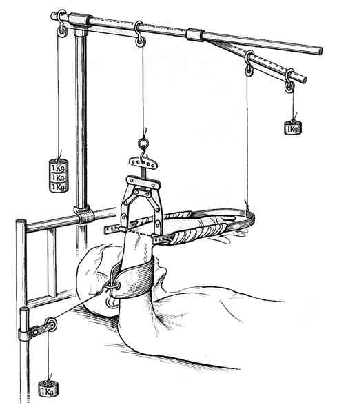
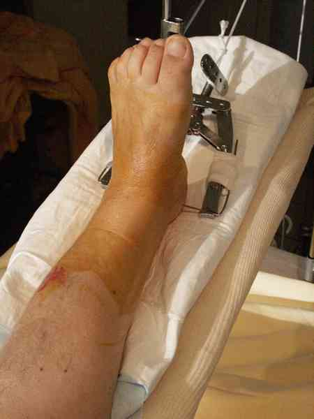
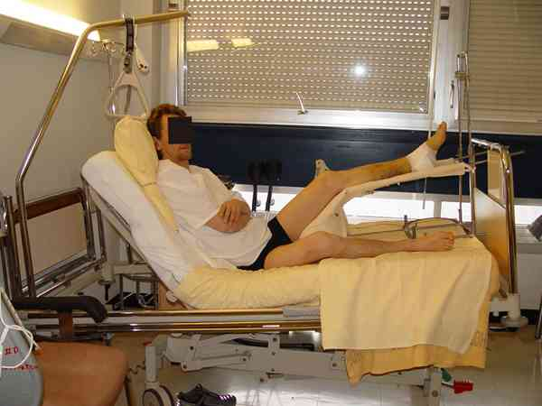

Bienvenue Sur Medical Education
Tractions en traumatologie des membres
AdulteSpécialité : traumatologie /
Points importants
- L’installation d’une traction trans-osseuse nécessite une asepsie rigoureuse comme pour un geste chirurgical
-
Il s’agit d’un traitement d’attente (parfois définitif) qui sert à :
- soulager la douleur
- réduire le saignement en alignant les fragments
- éviter les complications vasculo-nerveuses
- Il y a des règles précises concernant la technique de pose, le poids de traction et l’installation
- Radiographies après la mise en traction pour contrôler la réduction
Indications
FONCTION DU TYPE DE FRACTURE
Traction trans-olécranienne
- Fractures de l’extrémité supérieure de l’humérus
- Fractures de la diaphyse de l’humérus
- Fractures de la palette humérale
-
Pour :
- les fractures isolées très déplacées de l’humérus, qui ne peuvent pas être opérées immédiatement
- certains polytraumatisés
- certaines fractures ouvertes (parage, suture, puis traction et ostéosynthèse secondaire)
Traction trans-condylienne
- Fractures déplacées de l’anneau pelvien
- Fractures déplacées du cotyle
- En fait chaque fois qu’il faut tirer fort…
- Il faut éviter de mettre une traction trans-condylienne lorsque la fracture est peu déplacée ou non déplacée (mettre une traction trans-tubérosité antérieure du tibia)
Traction trans-tibiale
- Fractures de la diaphyse fémorale
- Fractures per-trochantériennes
- Fractures cervicales vraies
- Fractures sus et inter-condyliennes
- Habituellement, il s’agit d’une traction d’attente en vue d’un traitement chirurgical qui sera réalisé en différé
Traction trans-calcanéenne
- Fractures du plateau tibial
- Fractures de la jambe
- Fractures du pilon tibial
- Fractures bimalléolaires (le moins possible car mauvais contrôle de la stabilité transversale)
FONCTION DU MATERIEL
- Tractions de courte durée : système monté sur broche de Kirschner
- Tractions de longue durée : système monté sur clou de Steinman
- La traction collée est d’utilisation exceptionnelle car elle ne permet pas de réduire la fracture et ne permet pas, non plus, une installation confortable du patient
Présentation du matériel
La broche de Kirschner (18 à 20/10e de mm)
- Elle peut être mise au moteur (réducteur de vitesse pour ne pas brûler la peau) ou à la chignole
- Il faut un étrier pour broche de Kirschner de manière à mettre en tension la broche et installer le fil de traction
-
Avantages :
- facile à mettre
- petit « trou » dans l’os
-
Inconvénients :
- ne permet pas une traction trop lourde
- risque de « fil à couper le beurre » sur un os ostéoporotique
- ne permet pas une traction prolongée
- risque septique, si elle est laissée trop longtemps en place
Le clou de Steinman (4 à 5 mm de diamètre)
- Il doit être mis à la main (poignée américaine), jamais au marteau, car il y a un risque non négligeable de fracture
- Il faut l’étrier correspondant pour installer la traction
-
Avantages :
- possibilité d’une traction lourde
- moins de risque de « fil à couper le beurre »
-
Inconvénients :
- difficile à mettre (surtout en trans-condylien)
- relativement volumineux
- risque septique
La traction collée
- Elle peut être, soit collée, soit avec un système ventouse qui adhère à la peau
-
Avantages :
- facile à mettre (même par une infirmière)
- pas de risque septique
-
Inconvénients :
- ne permet pas une traction lourde
- risque d’arracher la peau chez les personnes âgées à peau fine
Description de la technique
MEMBRE SUPERIEUR
Traction trans-olécranienne
- Seule traction au niveau du membre supérieur
 fichier_927 Traction trans-olécranienne
- Utilisation habituellement d’une broche de Kirschner (18 à 20/10e de mm)
- Anesthésie locale + prémédication ou mieux MEOPAR
-
2 façons de mettre la broche :
- soit dans l’axe du cubitus (mauvais)
- soit transversalement (+++)
-
Mise en place transversale :
- 2 travers de doigt en dessous du sommet de l’olécrane
- 1 travers de doigt en avant de son bord postérieur
- de dedans en dehors pour éviter le nerf cubital
-
Installation :
- traction dans l ‘axe de l’humérus
- coude fléchi à 90°
- avant-bras suspendu par un jersey (poignet en face des yeux)
- poids de 6 à 7 kg (+++)
- le moignon de l’épaule doit décoller du plan du lit
MEMBRE INFERIEUR
Traction trans-condylienne
- Utilisation habituellement d’un clou de Steinman
- Anesthésie locale ou mieux bloc crural ou MEOPAR (si anesthésiste non disponible)
- Difficile car doit être insérée à la main et à la poignée américaine
- 2 travers de doigts au-dessus du bord supérieur de la rotule pour ne pas mettre le clou dans le genou (+++)
- Asepsie rigoureuse pour éviter le risque d’ostéite séquellaire
-
Installation :
- soit dans le plan du lit
- soit, bien mieux, sur une attelle de suspension de Rieunau installée sur un lit à cadre de Rieunau
- Traction entre 10 et 20 kg suivant le déplacement de la fracture (20% du poids du corps)
Traction trans-tibiale
fichier_930 fichier_930 - - - Traction transtibiale
- Utilisation soit d’un clou de Steinman, soit d’une broche de Kirschner au moteur
- C’est en général plus facile qu’une traction trans-condylienne
- Anesthésie locale
- Insertion un travers de doigt en arrière de la tubérosité tibiale antérieure (chez l’enfant, elle doit être plus bas que la tubérosité tibiale antérieure pour éviter de traverser le cartilage de croissance ce qui risque d’entraîner une épiphysiodèse iatrogène)
-
Installation :
-
fracture de la diaphyse fémorale :
- 10 à 15 kg de traction et jamais 10% du poids du corps (plutôt 20%)
- lit de Rieunau et attelle de suspension ce qui facilite grandement le nursing
-
fracture du massif trochantérien :
- 10 à 12 kg de traction
- de préférence sur lit de Rieunau
-
fracture cervicale vraie :
- adulte jeune (moins de 65 ans)
- 8 à 10 kg pour réduire la fracture car il y a un risque important de nécrose si la fracture n’est pas rapidement réduite
- en cas de fracture engrenée, il n’est pas nécessaire de mettre une traction trans-osseuse (tout au plus, une traction collée)
- installation sur lit de Rieunau de préférence
- adulte âgé (> 65 ans)
- 5 à 6 kg de traction
- la traction collée est possible, mais attention à la peau qui peut être très fragile
- l’installation sur lit de Rieunau est plus confortable et facilite le nursing
-
fractures sus et intercondyliennes :
- 10 à 12 kg de traction
- installation sur lit de Rieunau ou sur attelle de Bouillat en fléchissant le genou à 45° environ
-
fracture de la diaphyse fémorale :
Traction trans-calcanéenne
 fichier_928 Photo Traction trans-calcanéenne
-
Technique de pose :
- utilisation soit d’un clou de Steinman soit d’une broche de Kirschner
- il s’agit d’une technique facile car l’os est spongieux
- on utilise habituellement une anesthésie locale
- l’insertion de la broche ou du clou se fait 2 travers de doigt en dessous et en arrière de la pointe de la malléole externe
- la broche est insérée de dedans en dehors ou plus facilement de dehors en dedans
-
Installation :
- 6 à 8 kg de traction en fonction de la lésion
-
le membre doit reposer sur une attelle articulée de Bouillat
-  fichier_929 Photo Attelle articulée de Bouillat
- pour le plateau tibial : genou en extension
- pour les autres fractures, genou fléchi à 45° ce qui est beaucoup plus confortable pour le patient
Complications
Traction trans-condylienne
-
Inconvénients en cas de traction prolongée :
- raideur du genou
- ostéite du fémur
Bibliographie
- Traumatologie à l’usage de l’urgentiste. Sous la direction de Dominique Saragaglia. Editions Sauramps Médical. 2004
Auteur(s) : Jean-Jacques BANIHACHEMI, Dominique SARAGAGLIA